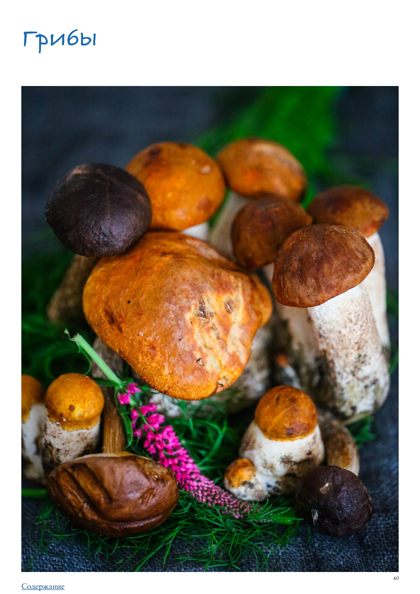

<!DOCTYPE html>
<html lang="en">
<head>
<meta charset="UTF-8">
<meta name="viewport" content="width=device-width, initial-scale=1.0">
<title>Грибы</title>
<style>
  * { box-sizing: border-box; margin: 0; padding: 0; }
  body { font-family: -apple-system, BlinkMacSystemFont, 'Segoe UI', Roboto, sans-serif;
         background: #faf7f4; color: #2d2926; max-width: 680px; margin: 0 auto; padding-bottom: 40px; }

  .photo-wrap img { width: 100%; max-height: 380px; object-fit: cover; object-position: center center; display: block; }

  .header { padding: 24px 24px 16px; }
  h1 { font-size: 26px; font-weight: 700; line-height: 1.2; margin-bottom: 10px; color: #1a1714; }
  .meta { font-size: 13px; color: #9a8a80; margin-bottom: 6px; }
  .rating { display: inline-block; background: #fff3e6; color: #c05f2a;
             font-size: 13px; font-weight: 600; padding: 3px 10px; border-radius: 20px; margin-bottom: 8px; }
  .source { font-size: 12px; color: #b0a09a; margin-top: 4px; }

  .info-bar { font-size: 13px; color: #5a4a3a; margin: 6px 0 4px; }

  .section { padding: 0 24px; margin-bottom: 24px; }
  .section-title { font-size: 15px; font-weight: 700; color: #7a4f2a;
                    text-transform: uppercase; letter-spacing: 0.6px;
                    margin-bottom: 12px; display: flex; align-items: center; gap: 8px; }
  .section-icon { font-size: 17px; }

  .subsection-title { font-size: 15px; font-weight: 700; color: #3a2a1a;
                       margin: 24px 0 10px; padding-bottom: 5px;
                       border-bottom: 2px solid #e8d5b8; }
  .ingr-subheader { font-size: 13px; font-weight: 700; text-transform: uppercase;
                     letter-spacing: 0.5px; color: #8a6a3a; margin: 14px 0 4px; }
  .ingr-list { list-style: none; display: flex; flex-direction: column; gap: 8px; }
  .ingr-list li { font-size: 15px; line-height: 1.5; padding: 8px 12px;
                   background: white; border-radius: 8px;
                   border-left: 3px solid #f0c080; }
  .qty { font-weight: 600; color: #c05f2a; }

  .steps { list-style: none; counter-reset: steps; display: flex; flex-direction: column; gap: 12px; }
  .steps li { font-size: 15px; line-height: 1.6; padding: 12px 14px 12px 48px;
               background: white; border-radius: 10px; position: relative; }
  .steps li::before { counter-increment: steps; content: counter(steps);
                       position: absolute; left: 12px; top: 12px;
                       width: 26px; height: 26px; background: #f0c080;
                       border-radius: 50%; display: flex; align-items: center;
                       justify-content: center; font-weight: 700; font-size: 13px; color: #7a4f2a; }

  .notes-list { list-style: disc; padding-left: 20px; margin: 0; }
  .notes-list li { font-size: 15px; line-height: 1.6; color: #2d2926; }

  .my-notes-section { margin-top: 8px; }
  .my-notes-box { background: #fffef5; border: 1.5px dashed #c8b870; border-radius: 12px;
                  padding: 14px 18px; font-size: 14px; line-height: 1.7; color: #5a4a30; }
  .my-notes-box p { margin-bottom: 6px; }
  .my-notes-box p:last-child { margin-bottom: 0; }
  .empty-note { color: #c0b090; font-style: italic; }

  .recipe-table { width: 100%; border-collapse: collapse; margin: 4px 0 12px; font-size: 14px; }
  .recipe-table th { background: #f5ede4; color: #7a4a28; padding: 8px 12px;
                      text-align: left; border: 1px solid #e0cfc0; font-weight: 700; }
  .recipe-table td { padding: 8px 12px; border: 1px solid #e8ddd5; vertical-align: top;
                      line-height: 1.5; }
  .recipe-table tr:nth-child(even) td { background: #fdf8f5; }

  p.para { font-size: 15px; line-height: 1.65; color: #2d2926; margin-bottom: 12px; }
  p.para:last-child { margin-bottom: 0; }

  .inline-photo { margin: 16px 0; border-radius: 10px; overflow: hidden; }
  .inline-photo img { width: 100%; max-height: 320px; object-fit: cover; object-position: center center; display: block; }
  .inline-photo.portrait { display: flex; flex-direction: column; align-items: center; background: transparent; }
  .inline-photo.portrait img { width: auto; max-width: 55%; max-height: none; object-fit: contain; border-radius: 10px; }
  .inline-photo.portrait figcaption { width: 55%; text-align: center; }
  .inline-photo figcaption { font-size: 12px; color: #9a8a80; padding: 6px 10px;
                               background: #f5f0eb; font-style: italic; }
  .inline-video { margin: 16px 0; border-radius: 10px; overflow: hidden; background: #000; }
  .inline-video video { width: 100%; max-height: 400px; display: block; }
  .inline-video figcaption { font-size: 12px; color: #9a8a80; padding: 6px 10px;
                               background: #f5f0eb; font-style: italic; }

  .related-section { font-size: 13px; margin-top: 8px; color: #9a8a80; }
  .related-label { font-weight: 600; color: #7a4f2a; }
  .related-link { color: #c05f2a; text-decoration: none; font-weight: 500; }
  .related-link:hover { text-decoration: underline; }

  .cooked-bar { font-size: 13px; margin-top: 10px; display: flex; flex-wrap: wrap; align-items: center; gap: 6px; }
  .cooked-label { font-weight: 600; color: #7a4f2a; }
  .cooked-chip { background: #f0ede6; color: #5a4a3a; padding: 3px 10px;
                  border-radius: 20px; font-size: 13px; border: 1px solid #d8cfc4; }

  .my-photo-wrap { margin: 24px 24px 0; border-radius: 12px; overflow: hidden;
                    border: 2px solid #e8d9c8; }
  .my-photo-label { background: #f5ede4; color: #7a4f2a; font-size: 12px; font-weight: 600;
                     padding: 6px 14px; letter-spacing: 0.4px; }
  .my-photo-wrap img { width: 100%; max-height: 420px; object-fit: cover;
                        object-position: center; display: block; }

  .back-btn { display: inline-flex; align-items: center; gap: 6px;
               margin: 28px 24px 20px;
               background: #c05f2a; color: white;
               font-size: 14px; font-weight: 600;
               padding: 8px 16px; border-radius: 20px;
               text-decoration: none; }
  .back-btn:hover { background: #a04e22; text-decoration: none; }

  @media (max-width: 480px) {
    h1 { font-size: 22px; }
    .steps li { padding-left: 42px; }
  }
</style>
</head>
<body>
  <a class="back-btn" href="../cookbook.html">← Catalog</a>
  <div class="photo-wrap"></div>
  <div class="header">
    
    <h1>Грибы</h1>
    <div class="meta">ПРАктика. Овощи</div>
    
    
    
    <div class="source">Source: ПРАктика. Овощи</div>
  </div>
  
  
        <div class="section">
          
          <p class="para">Грибы</p><p class="para">Хотя грибы технически нельзя назвать овощами, в кулинарной практике их относят именно к этой группе продуктов из-за схожести применения и вкусового профиля. Удивительно, но в западных кухнях, за исключением французской, грибы используются мало и до сих пор считаются, за исключением доступных шампиньонов, настоящей экзотикой. Но в России отношение к грибам всегда было особым, их с удовольствием собирали и собирают в дикой природе, готовят и высоко ценят. Большинству из нас с детства знакомы чудесные вкусы соленых груздей и рыжиков, жареных лисичек, маринованных опят и моховиков, сытного супа из сушеных грибов, вкусной жареной картошки или отварной гречки с грибами, «мяса по￾французски» под слоем сыра и шампиньонов… Среди заимствований из других европейских кухонь можно назвать ставшие популярными ризотто, пиццу и пасту с грибами, жюльен, изысканный грибной суп-крем, омлет с шампиньонами и многое другое. Важную роль грибы играют в азиатских кухнях, и сейчас их можно все чаще встретить в продаже в России и Европе: шиитаки, шимеджи, эноки, эринги… Интересное отличие в использовании грибов в Азии и на Западе состоит в том, что для нас грибы — прежде всего источник яркого собственного вкуса, в то время как в азиатских блюдах они, скорее, служат нейтральным по вкусу текстурным элементом. Съедобных грибов насчитывается более 300 видов, но мы приводим список только самых популярных и общедоступных. Белые грибы — считаются лучшими среди всех грибов, их можно готовить любыми способами: жарить, варить, мариновать, солить, сушить. Часто используются для грибных супов и ценятся за то, что не делают цвет бульона темным. Наиболее популярны в русской и итальянской кухнях. Вешенки (устричные грибы) — культивируемые грибы, которые можно найти в продаже повсеместно и круглый год. Ценятся за простоту выращивания и приятный ненавязчивый вкус. В кулинарии универсальны — их можно варить, жарить, тушить, мариновать, использовать в начинках пирогов. Особенно хороши вешенки в азиатских супах типа Том Ям, которым придают чуть хрустящую текстуру. В отличие от шампиньонов, вешенки нельзя есть сырыми, так как они содержат хитин, разрушающийся лишь при термической обработке. Грузди — лесные грибы, бывают разных видов: темные (черные), желтые и светлые (белые). Содержат горький млечный сок, поэтому перед приготовлением их нужно обязательно вымачивать и/или отваривать. Чаще всего грузди солят, и это одни из самых вкусных соленых грибов. Если вам попадутся соленые грузди, попробуйте сделать с ними начинку для открытого пирога, нарезав и дополнив жареным луком и отварным яйцом, и смазав перед выпечкой сметаной — это потрясающе вкусно. Лисички — желтые грибы с воронкообразной шляпкой особо любимы грибниками за то, что они не бывают червивыми. В кулинарии ценятся за характерный приятный вкус. Чаще всего лисички жарят, особенно вкусны жареные лисички в сметане. В Германии готовят сливочный соус с лисичками к стейку, и это прекрасное дополнение к хорошей говядине. Маслята — лесные грибы с коричневыми влажными, будто смазанными маслом шляпками и желтоватой мякотью содержат очень много влаги, поэтому их не сушат. Чаще всего маслята варят, тушат, маринуют и жарят. Моховики — лесные грибы с коричневатой шляпкой. Характерная особенность моховика в том, что при разрезании или отламывании ножки светлая желтоватая мякоть синеет, но это никак не отражается на вкусовых качествах и не служит сигналом, что гриб ядовитый, просто окисляются содержащиеся в нем вещества. Моховики можно жарить и сушить, но чаще их солят или маринуют.</p><p class="para">Муэр (китайские или черные древесные грибы) — темные тонкие грибы в виде «ушек», растущие на стволах деревьев, популярные в азиатских кухнях. Примечательны тем, что даже приготовленные сохраняют упругую, хрустящую текстуру и отличаются легким «дымным» ароматом при совершенно нейтральном вкусе. В продаже часто встречаются в сушеном виде, в форме маленьких брикетов размером со спичечный коробок. Перед готовкой грибы нужно замочить в достаточно большом количестве воды, так как они сильно набухают и увеличиваются в объеме в 7–8 раз, и удалить жесткие ножки. Грибы с нейтральным вкусом можно варить, тушить, жарить, добавлять в состав стир-фраев. Намеко (чешуйчатка) — азиатские грибы, внешне напоминающие опята, с маленькими сферическими шляпками золотисто-оранжевого цвета. Часто встречаются в продаже в замороженном виде и называются «опятами», хотя вкус и текстура у них совсем другие. Используются как традиционная добавка в суп мисо или лапшу рамен. Опята — растут всегда «дружными семейками», чем они более зрелые, тем больше раскрыта шляпка, у полностью созревших грибов она становится плоской. В кулинарии ценятся за приятный характерный мягкий вкус. Чаще всего опята маринуют. Тонкие ножки, как правило, не используют. Подберезовики — деликатесные лесные грибы с нежными серыми шляпками и мясистыми ножками. Очень вкусны в жареном виде, также их часто сушат для варки супов. Придают грибному бульону темный цвет. Подосиновики — по вкусу и использованию похожи на подберезовики, внешне отличаются от них лишь цветом более плотной красновато-коричневой шляпки. Лучше всего их жарить и сушить. Придают грибному бульону темный цвет. Рыжики — ярко-оранжевые грибы особенно хороши соленые или в виде грибной икры, но также их можно жарить или варить, и благодаря содержащемуся в грибах млечному соку, их вкус в готовом виде довольно пикантный, островатый. Сморчки — ранние весенние грибы с характерной сморщенной шляпкой. Обладают изысканным вкусом, особенно хороши жареные, с добавлением сметаны. Также сморчки можно добавлять в ризотто, делать на их основе грибной соус. Трюфели — совершенно особые грибы, растущие под землей и использующиеся, скорее, как специя из-за характерного сильного аромата. Для того чтобы придать изысканную ноту омлету, картофельному пюре, ризотто, пасте, тартару из говядины, фондю или другим блюдам, достаточно нескольких тончайших ломтиков сырого гриба, цена за килограмм которого в неурожайные годы может доходить до 9000 евро. Из-за высокой стоимости на основе трюфеля делаются более доступные продукты, например трюфельная паста, где к измельченным шампиньонам добавляется немного трюфеля для аромата. Трюфели бывают белые и черные, они различаются по внешнему виду (черный не только темный по цвету, но и с неровной поверхностью, состоящей из мелких бугорков), но аромат у них одинаковый. Шампиньоны — самые «демократичные» и доступные из культивируемых грибов, универсальные: их можно использовать абсолютно для любых блюд, включающих в состав грибы. Шампиньоны отличает приятный нежный вкус и абсолютная безопасность, их можно (и нужно!) есть даже сырыми. В продаже встречаются разные сорта этого гриба: белые, коричневые, портобелло с очень крупными шляпками, подходящими для фарширования. Шиитаке — самый популярный вид грибов в азиатских кухнях, особенно в китайской и японской. Эти грибы с коричневатой шляпкой и насыщенным «мясным» вкусом умами в готовом виде относятся к числу универсальных: их жарят, варят, тушат, маринуют (кстати, в России</p><p class="para">почему-то маринованные шиитаке продаются под названием «грузди», хотя это совершенно неверно), добавляют в соусы, сушат (сушеные часто используют для варки ярких по вкусу бульонов). У шиитаке жесткая ножка, поэтому готовят только шляпки. Шимиджи — популярные прежде всего в японской кухне миниатюрные устричные грибы, внешне похожие на намеко и опята. Ценятся за свойство сохранять хрустящую и упругую текстуру в готовом виде, вкус ближе всего напоминает вешенки. Шимиджи варят, тушат, жарят. Эноки — грибы необычного вида, с длинными белыми, похожими на лапшу ножками и крошечными шляпками. Обладают нейтральным вкусом, используются в блюдах азиатской кухни для придания легкой хрустящей текстуры. Требуют минимальной термической обработки, добавляются в супы, стир-фраи буквально в последнюю минуту, чтобы не размякли. Эринги (царские или степные вешенки) — крупные грибы с очень толстой, как бы раздутой ножкой и маленькой светлой шляпкой. Очень вкусны в жареном виде без каких-либо добавок, только с солью и перцем. Но даже приготовленные, эринги сохраняют очень плотную мясистую текстуру, что понравится не всем.</p>
        </div>
        <div class="section">
          <h2 class="section-title"><span class="section-icon">📌</span>Как выбирать</h2>
          <p class="para">В случае с лесными грибами важнее всего покупать их в проверенных местах, так как у многих из лесных грибов есть ядовитые «двойники», способные вызвать серьезное отравление. В идеале покупать такие грибы стоит у официальных поставщиков, имеющих сертификаты, и где грибы проходят строгий контроль качества. Культивируемые грибы в этом отношении полностью безопасны: шампиньоны, вешенки, все азиатские грибы выращивают промышленным способом, их можно готовить и есть, не опасаясь отравления. Разумеется, чем свежее грибы, тем лучше, поэтому выбирайте плотные, упругие, не вялые, не потемневшие грибы. Помните, что грибы категорически не рекомендуется мыть, поэтому по возможности ищите чистые. Лесные грибы лучше выбирать мелкие — чем они крупнее, тем больше вероятность, что червивые. Шампиньоны следует выбирать под способ готовки: мелкие подойдут для варки, жарки или тушения в целом виде, средние можно нарезать кусочками или ломтиками любой формы, очень крупные (портобелло) идеальны для фарширования или использования в жареном виде в качестве «котлеты» для вегетарианского бургера.</p>
        </div>
        <div class="section">
          <h2 class="section-title"><span class="section-icon">📌</span>Как хранить</h2>
          <p class="para">Лесные грибы лучше сразу после покупки или сбора очистить и обработать. Есть способ хранения лесных грибов и в холодильнике до 3 дней, который я с успехом использую: внимательно перебрать и удалить все червивые грибы, далее выложить самую большую миску из арсенала бумажными полотенцами в несколько слоев, выложить грибы так, чтобы они не сильно давили друг на друга, то есть крупные снизу, мелкие сверху, накрыть сверху еще одним слоем бумажных полотенец. Далее в процессе хранения за грибами нужно следить, но 3 дня в холодильнике на самой холодной полке — вполне реальный срок. Также можно либо слегка отварить, либо заморозить их для более долгого хранения. Шампиньоны, вешенки, эринги и другие культивируемые грибы хорошо хранятся в отделении для овощей холодильника до 5 дней (можно и дольше, но при длительном хранении теряются полезные свойства грибов).</p><p class="para">Сухие грибы следует хранить в сухом и защищенном от прямого света месте до 1 года.</p>
        </div>
        <div class="section">
          <h2 class="section-title"><span class="section-icon">📌</span>Как подготавливать</h2>
          <p class="para">Еще раз подчеркнем: не нужно мыть грибы, особенно если вы собираетесь их жарить. Лесные грибы с сильными загрязнениями можно быстро промыть, но затем хорошо обсушить перед готовкой. Помните, что все грибы впитывают воду как губка, поэтому в идеале достаточно просто очистить их бумажным полотенцем или мягкой щеточкой. Исключение из этого правила — лисички, они требуют непременного мытья, даже замачивания и нескольких промываний, потому что в них часто скапливается грязь. Промытые лисички нужно выложить на бумажные полотенца и хорошо просушить перед готовкой. Сушеные грибы перед готовкой нужно замочить: залить горячей водой, выдержать 10–20 минут (в зависимости от размера и вида грибов), затем аккуратно выловить вилкой или небольшой шумовкой, чтобы не потревожить осевшую на дно возможную грязь или песок. Как правило, полученный настой используется в готовке, поэтому нужно очень осторожно слить его с осадка либо процедить через бумажный кофейный фильтр.</p>
        </div>
        <div class="section">
          <h2 class="section-title"><span class="section-icon">📌</span>Лайфхаки</h2>
          <ul class="notes-list"><li>Маслята не следует готовить вместе с подосиновиками или подберезовиками — они потемнеют.</li><li>Любой грибной суп или соус станет ароматнее, если приправить его мелко смолотыми сушеными белыми грибами или шиитаке (сейчас продается уже готовая пудра из этих грибов, или можно смолоть сухие грибы самим).</li><li>Если готовите только шляпки, ножки не выбрасывайте, а заморозьте и используйте при варке грибного супа или бульона. Знаете ли вы… что трюфельное масло, популярное благодаря доступной цене, не настаивается на настоящих трюфелях? Оно содержит вещество, придающее трюфелям их характерный аромат, которое получают из органического сырья или синтезируют химически, и в этом единственное отличие. Даже если в бутылке присутствуют хлопья настоящего трюфеля — это не более чем рекламный трюк. Если хотите натуральное трюфельное масло, придется настаивать его самим, при этом срок его годности будет очень коротким, не дольше недели.</li></ul>
        </div>
        <div class="section">
          <h2 class="section-title"><span class="section-icon">📌</span>Как готовить</h2>
          <p class="para">Грибы можно готовить разными способами: отваривать, добавлять в супы и овощные рагу, тушить жарить, запекать в духовке и на гриле, измельчать и использовать в качестве начинки или основы вегетарианского «фарша», а также солить и мариновать. Жареные грибы Грибы, если они влажные, обсушить и нарезать не слишком тонко. Выложить на сухую сковородку и готовить на среднем огне, пока не выделится довольно большое количество жидкости. Прибавить огонь и выпарить жидкость, помешивая. Влить в сковородку с грибами масло, псолить, поперчить, готовить до тех пор, пока у грибов не появится со всех сторон золотистая корочка. По желанию можно вначале обжарить до золотистого цвета лук, в конце добавить мелко порубленный зубчик чеснока, и лишь затем класть грибы. Если хотите пожарить картошку с грибами, лучше грибы приготовить на сковородке, как описано выше, а картошку либо отварить, либо пожарить в отдельной посуде, и только затем соединить вместе, перемешать и слегка прогреть, чтобы вкусы объединились.</p>
        </div>
        <div class="section">
          <h2 class="section-title"><span class="section-icon">📌</span>Рецепты с грибами на каждый день</h2>
          <ol class="steps"><li>Быстрая икра из шампиньонов: разрезать пополам 500 г небольших шампиньонов, порубить листочки с 1 маленькой веточки розмарина и 1 веточки тимьяна. Разогреть в сковородке 2 ст. л. оливкового масла, выложить грибы, посолить, поперчить и готовить на средне￾сильном огне под крышкой, изредка помешивая, пока не выделится жидкость, около 5 минут. Прибавить огонь до сильного, снять крышку, выпарить жидкость и слегка подрумянить грибы в течение 7–8 минут. Влить еще 4 ст. л. оливкового масла и 2 ст. л. белого винного уксуса, добавить розмарин и тимьян. Довести до кипения, снять с огня и немного остудить. Затем переложить содержимое сковородки в кухонный комбайн (вместе с жидкостью) и в пульсирующем режиме измельчить в крупную крошку. Переложить в миску и дать настояться около 30 минут. Подавать с тостами.</li><li>Салат с сырыми шампиньонами: нарезать 200 г сырых шляпок шампиньонов тонкими ломтиками, 1 луковицу шалота — тонкими полукольцами, 2–3 стебля сельдерея — тонкими ломтиками (предварительно очистив от жестких волокон с помощью овощечистки). Порубить листочки 3–4 веточек петрушки и 1 веточки эстрагона (тархуна). Смешать в салатнике ломтики грибов с шалотом, 4 ст. л. оливкового масла, 1,5 ст. л. лимонного сока и 1/4 ч. л. соли. Перемешать и дать постоять 10 минут. Затем добавить к грибам сельдерей и зелень, поперчить и проверить, хватает ли соли. При подаче посыпать салат тонкими хлопьями пармезана.</li><li>Рагу из разных грибов: залить водой 20 г сухих белых грибов, дать набухнуть, достать, отжать и мелко нарубить. Разрезать пополам или на четвертинки, если грибы крупные, 400 г лисичек и 400 г коричневых шампиньонов. Мелко порубить 1 луковицу, измельчить 3 зубчика чеснока. Выложить лисички и шампиньоны в сотейник, потушить без масла, пока грибы не выделят жидкость, затем процедить жидкость через дуршлаг и сохранить, грибы переложить в миску. В чугунной или обычной толстостенной кастрюле разогреть 30 г сливочного масла, выложить белые грибы, посолить и обжарить на среднем огне до светло-золотистого цвета, около 5 минут. Добавить лисички с шампиньонами, обжарить, помешивая, до легкого подрумянивания, около 5 минут. Добавить чеснок и 1 веточку тимьяна, готовить еще 30 секунд. Влить в кастрюлю жидкость от грибов и 120 мл сухого красного вина, перемешать, отскребая лопаткой со дна кастрюли приставшие кусочки. Влить 400 г резаных томатов или пассаты, довести до кипения и готовить на среднем огне до выпаривания лишней жидкости и загустения соуса, около 10 минут. Перед подачей веточку тимьяна удалить, по желанию посыпать рубленой петрушкой. Стир-фрай с грибами портобелло на 2–3 порции 450 г шляпок портобелло 100 г стручкового горошка (манжту) 1 морковь 1 зубчик чеснока 2 см свежего корня имбиря 5 ст. л. оливкового или растительного масла щепотка хлопьев перца чили для глазури 3 ст. л. кленового сиропа 2 ст. л. мирина 1 ст. л. соевого соуса</li><li>для соуса 3 ст. л. оливкового масла 120 мл овощного или куриного бульона 2 ст. л. соевого соуса 1,5 ст. л. мирина 2 ч. л. рисового уксуса 2 ч. л. кукурузного крахмала 2 ч. л. темного кунжутного масла</li><li>Шляпки портобелло нарезать длинными толстыми ломтиками. У стручков горошка удалить жесткие кончики, нарезать ломтиками шириной 5 мм. Морковь нарезать тонкими брусочками или натереть на терке для корейской морковки. Чеснок измельчить, корень имбиря натереть.</li><li>Смешать в отдельных мисках все ингредиенты глазури и соуса. В третьей миске смешать 1 ст. л. оливкового масла с чесноком, имбирем и хлопьями чили.</li><li>Разогреть в большой сковородке на средне-сильном огне 2 ст. л. масла, выложить половину ломтиков грибов и обжарить с обеих сторон до золотистой корочки. Переложить в отдельную миску, пожарить оставшиеся грибы, при необходимости добавив немного больше масла.</li><li>Вернуть грибы в сковородку, влить глазурь и готовить, часто помешивая, до загустения глазури, 1–2 минуты. Переложить в миску, где лежали жареные грибы.</li><li>Протереть сковородку бумажным полотенцем, влить оставшееся масло и разогреть на сильном огне. Выложить стручковый горошек и морковь, готовить, постоянно помешивая, около 5 минут, чтобы овощи лишь немного размягчились, сохранив хрустящую текстуру. Сдвинуть овощи к краям сковородки, выложить в середину смесь чеснока и имбирем и прогреть, помешивая, 30 секунд, затем перемешать содержимое сковородки.</li><li>Вернуть в сковородку жареные грибы в глазури. Взболтать соус, влить в сковородку и прогреть, помешивая, до загустения, 1–2 минуты, затем разложить по тарелкам и подавать. Грибной суп с перловкой на 6 порций 1 стакан перловой крупы 30–40 сушеных грибов 1 луковица 1 средняя морковь 2–3 картофелины 1 ст. л. оливкового масла 2 л воды 3–4 лавровых листа сметана для подачи укроп или петрушка для подачи (по желанию) соль, свежемолотый черный перец по вкусу</li><li>Перловую крупу заранее замочить, лучше на ночь.</li><li>Сухие грибы замочить в небольшом количестве воды минут на 20, затем достать и нарезать, если они крупные. Настой не выливать.</li><li>Лук мелко порубить, морковь мелко нарезать или натереть на крупной терке, картофель нарезать кубиками примерно по 5 мм.</li><li>На оливковом масле на среднем огне слегка обжарить лук, около 5 минут. Когда он начнет менять цвет, добавить к нему морковь. Жарить еще около 5 минут, помешивая.</li><li>С перловой крупы слить воду и промыть. Выложить в кастрюлю грибы и крупу, влить настой от грибов — аккуратно, не весь, чтобы возможная грязь осталась на дне миски. Влить воду, положить лавровый лист и варить около 20 минут. Посолить.</li><li>Добавить картофель, зажарку из лука с морковью, варить до мягкости картофеля, около 15 минут.</li><li>Поперчить, дать немного настояться под крышкой (5–7 минут). Подавать со сметаной, по желанию посыпав рубленой зеленью.</li></ol>
        </div>
        <div class="section">
          <h2 class="section-title"><span class="section-icon">🧂</span>Сочетание грибов с другими продуктами</h2>
          <p class="para">Грибы сочетаются с курицей, свининой, говядиной, беконом, сыром — твердым, козьим и с голубой плесенью, яйцами, картофелем, тыквой, капустой, луком, чесноком, эстрагоном, петрушкой, тимьяном, розмарином, грецкими орехами, белой жирной рыбой, морскими гребешками и мидиями. Трюфель хорошо сочетается с яйцами, любыми сырами, говядиной, свининой, курицей, картофелем, капустой (белокочанной и цветной), спаржей, артишоками, корнем сельдерея, другими грибами, чесноком.</p>
        </div>
        <div class="section">
          <h2 class="section-title"><span class="section-icon">📌</span>Необычные сочетания</h2>
          <ul class="notes-list"><li>лисички и курага (в виде изысканной начинки для дичи)</li><li>белые грибы и черника (в ризотто и лазанье)</li></ul>
        </div>
        <div class="section">
          <h2 class="section-title"><span class="section-icon">📌</span>Что еще можно приготовить с грибами</h2>
          <ul class="notes-list"><li>Тосты или брускетты с жареными грибами</li><li>Вегетарианский бургер с «котлетой» из портобелло</li><li>Омлет с шампиньонами</li><li>Жюльен с грибами или с курицей и грибами</li><li>Грибной суп-пюре</li><li>Грибной суп-капучино</li><li>Шашлычки из грибов на гриле</li><li>Томленая гречка с грибами</li><li>Плов с грибами</li><li>Вареники с грибами</li><li>Грибные котлеты</li><li>Мясные зразы с грибами и луком</li><li>Капустная солянка с грибами</li><li>Овощное рагу с грибами</li><li>Лапша по-азиатски с шиитаке</li><li>Вегетарианская лазанья с грибами</li><li>Паста с белыми грибами и сливочным соусом</li><li>Ризотто с белыми грибами или сморчками</li><li>Полента с жареными грибами</li><li>Картофельные ньокки в грибном соусе</li><li>Фаршированные шляпки грибов</li><li>Грибной соус к стейку</li><li>Пирожки с грибами и рисом</li><li>Несладкий штрудель с грибной начинкой</li><li>Киш с грибами</li><li>Маринованные грибы</li><li>Соленые грибы</li></ul>
        </div>
</body>
</html>